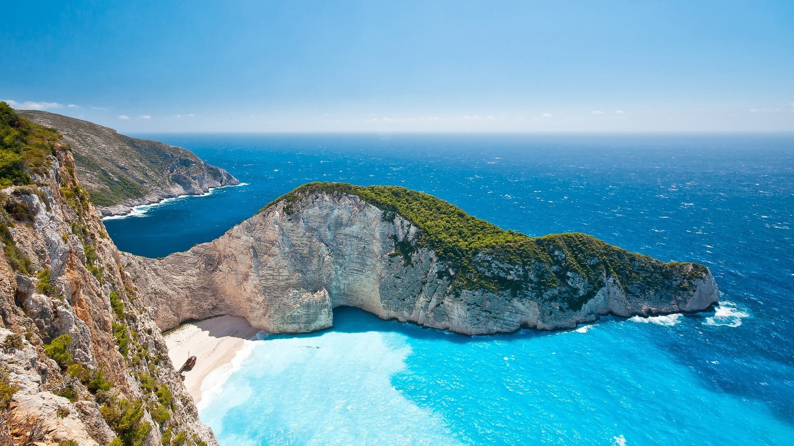
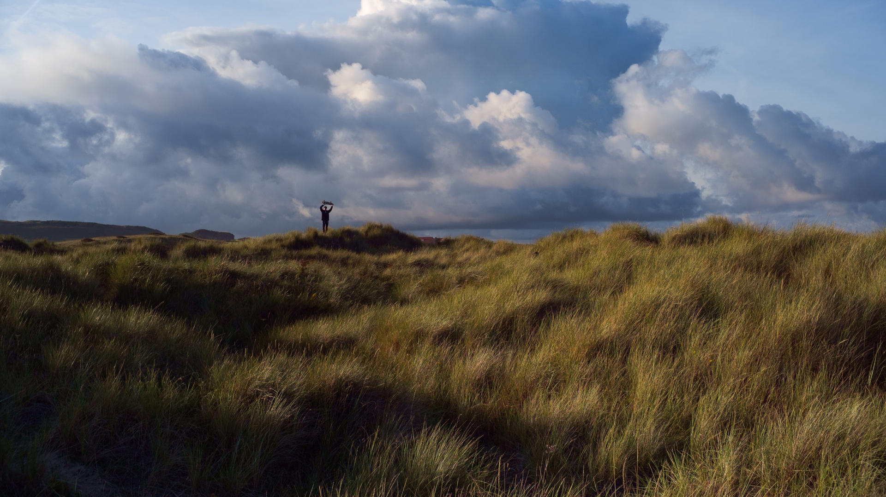
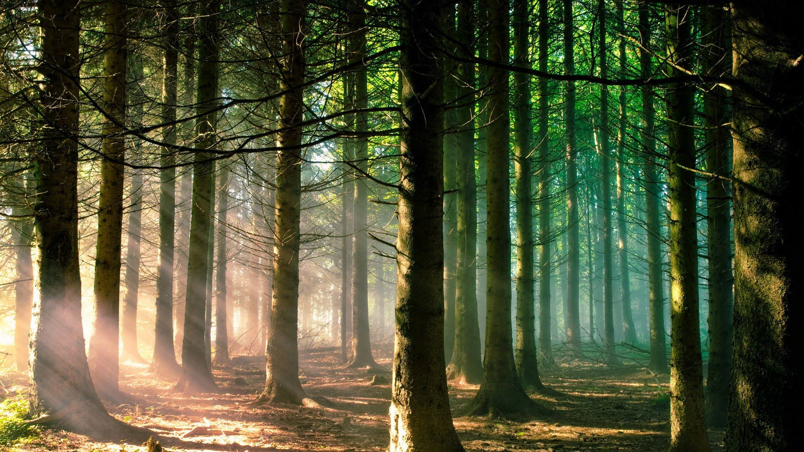

Гори
«Гори мають владу звати нас у свої краї, це вже не пристрасть, це моя доля...»

Моря
«По суті ж у світі немає нічого стійкого. Людина – це лише хвиля. Людство – це море.»

Степи
«Сам знаєш: удома сидиш – останнє проїси, а по степу поблукаєш – щастя знайдеш.»

Ліси
«Ліси, як і озера, моря і річки, — найкраща прикраса землі, її чудове святкове вбрання.»